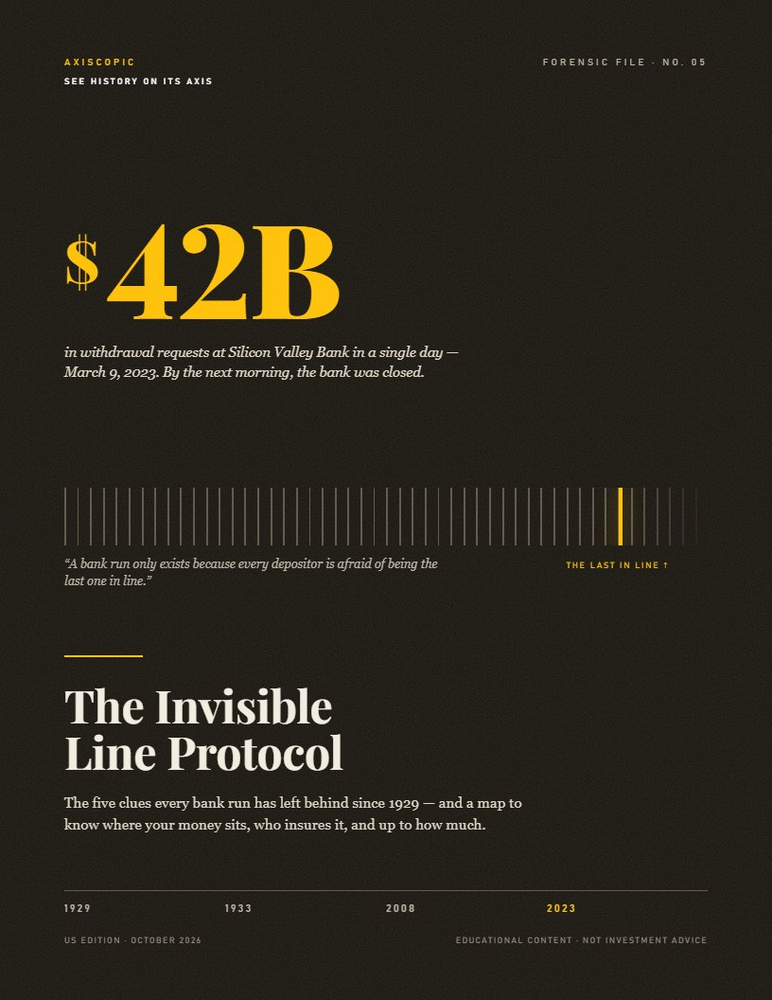
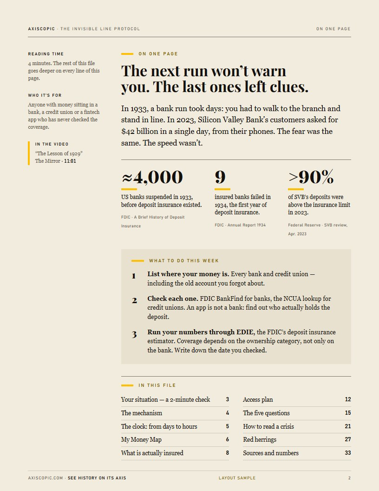

- File
- No. 05 · The Invisible Line Protocol
- Covers
- 1929 · 1933 · 2010 · 2023
- Length
- ~60 pages in four parts, plus a spreadsheet
- Sources
- FDIC · Federal Reserve · Keynes (1936) · Malmendier & Nagel (2011) · contemporary press
- Formats
- Print PDF (Letter) · phone edition · spreadsheet
- Refund
- 7 days, no questions asked
Would you know in time, or only when the app freezes?
On March 9, 2023, customers asked to pull $42 billion out of Silicon Valley Bank in a single day. Regulators closed it the next day.1 There was no war and no fraud. There was a piece of news, a phone in every pocket, and a fear almost a century old.
More than 90% of SVB's deposits sat above the insurance limit.1 Most of its customers had never checked. This file doesn't tell you where to put your money. Nobody honest can, without knowing your situation. It shows you how to check, against the official source, what is covered and what isn't.
The asset changes. The speed changes. The line doesn't.
Each cycle runs on the same three parts: borrowed money, collective certainty, and an exit too narrow for everyone at once. What the file adds is the record of each one, and what deposit insurance, created in 1933, did and didn't change.
4 parts. Each one answers a different piece of the question.
| Part | What it does | Length |
|---|---|---|
| The Forensic File | The full cycle, from Minsky's five stages to the incentives Keynes described in 1936, every claim tied to a primary source. | ~40 pp. |
| My Money Map | List every institution holding your money, check coverage with the FDIC's own tools, and see how much would sit above the limit. Names no bank or product. | 8 pp. + sheet |
| The Three Who Warned | Robertson, Born and Rajan were right too early. What it cost them, and a method for reading the doubter's argument instead of the coverage mocking it. | 12 pp. |
| The Five Questions | The pocket card from the documentary, with where to look up each answer. | free |


Who this is not for.
- Anyone looking for a trade, a ticker or a price target. We don't publish them.
- Anyone who wants to be told a crash is coming next month. We don't know, and neither does anyone selling that.
- Anyone with no money in a U.S. bank. The map is built around FDIC coverage. (Our Brazilian edition covers Brazil.)
One price. Same today as next month.
7-day refund, no questions asked: write to us and every cent comes back. No countdown, no upsell maze, no subscription hidden in the checkout.
Short answers.
Is this investment advice?
No. It's educational content on economic history. We don't analyze, recommend or offer any security, issuer or financial institution.
What format is it?
A print-ready PDF in U.S. Letter, a phone edition, and a spreadsheet for the money map. Yours to keep.
How do refunds work?
E-mail us within 7 days of purchase and we refund the full amount. No form, no reason required.
Who's behind it?
The AxisCopic editorial team, the people behind the documentaries. Same research, same rule: no source, no claim.
Know where your money stands before the next line forms.
Get notified · $19Rather start free? Get the Five Questions card.
- Board of Governors of the Federal Reserve System, “Review of the Federal Reserve's Supervision and Regulation of Silicon Valley Bank,” April 2023.
- FDIC, “A Brief History of Deposit Insurance in the United States.”
- CFTC and SEC, “Findings Regarding the Market Events of May 6, 2010,” September 2010.
All links and access dates are added before publication.